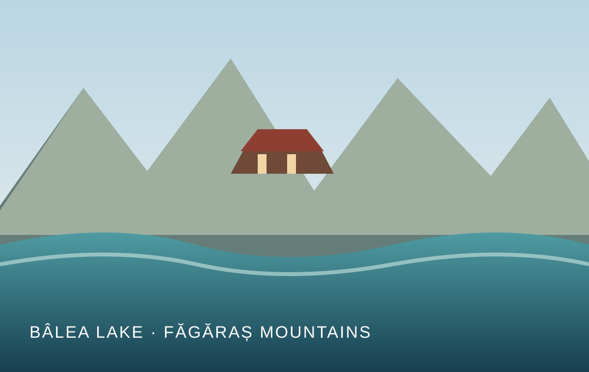

Alpine landscapes
Discover high mountain scenery, glacial lakes and sweeping views across the Carpathians.
See the highlights Carpathian Road Guide
Carpathian Road Guide
Romania · Făgăraș Mountains
Experience one of Romania’s most spectacular mountain roads. Discover breathtaking landscapes, fascinating history, famous landmarks and important travel information before starting your journey.
A journey through the Carpathians
From dramatic hairpin bends to quiet alpine water, the Transfăgărășan brings together remarkable scenery and engineering.

Discover high mountain scenery, glacial lakes and sweeping views across the Carpathians.
See the highlights
Plan stops at Poenari Castle, Vidraru Dam, Bâlea Waterfall and Bâlea Lake.
Explore the landmarks
Follow the route from the southern approach towards Cârțișoara and check conditions before you go.
View the routeBefore you set off
The high-altitude section is affected by seasonal weather and road restrictions. Check official updates, allow extra time and follow all signs and barriers.
Travel thoughtfully: respect wildlife, take your rubbish with you and enjoy the landscape without leaving the marked areas.
Read safety warnings